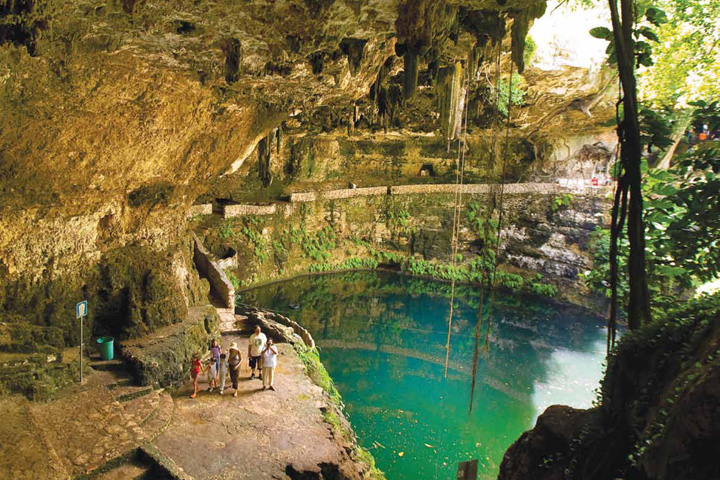
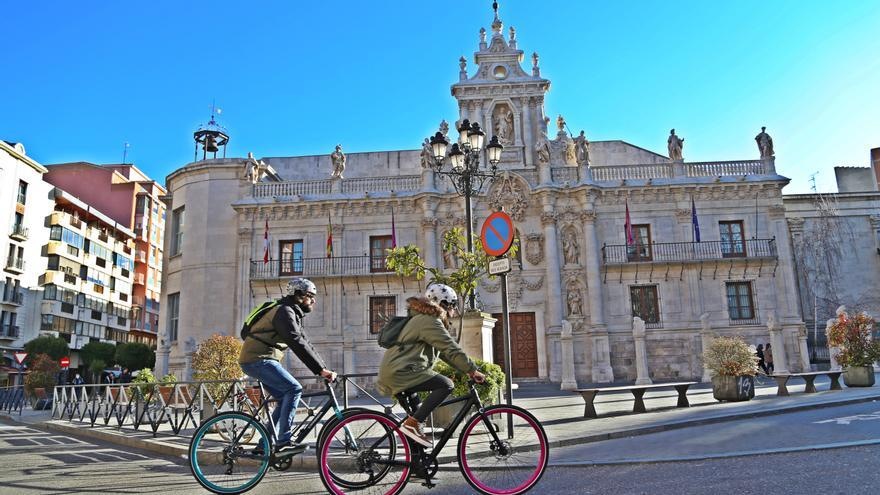
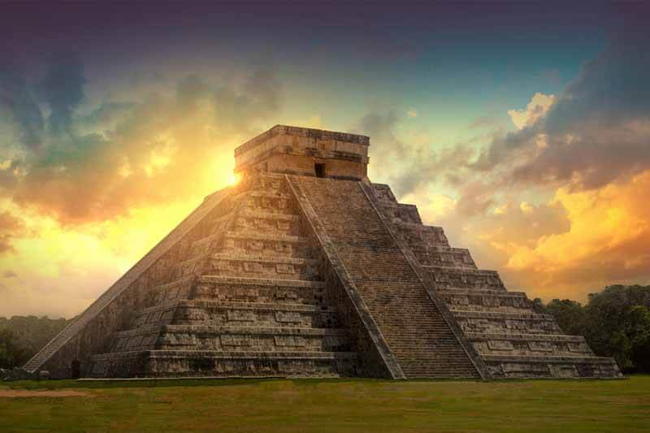
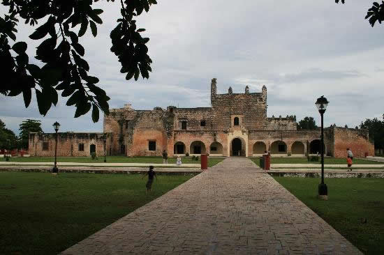
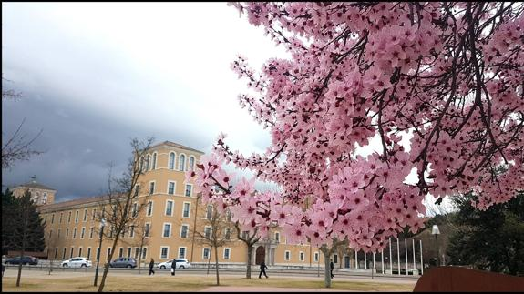
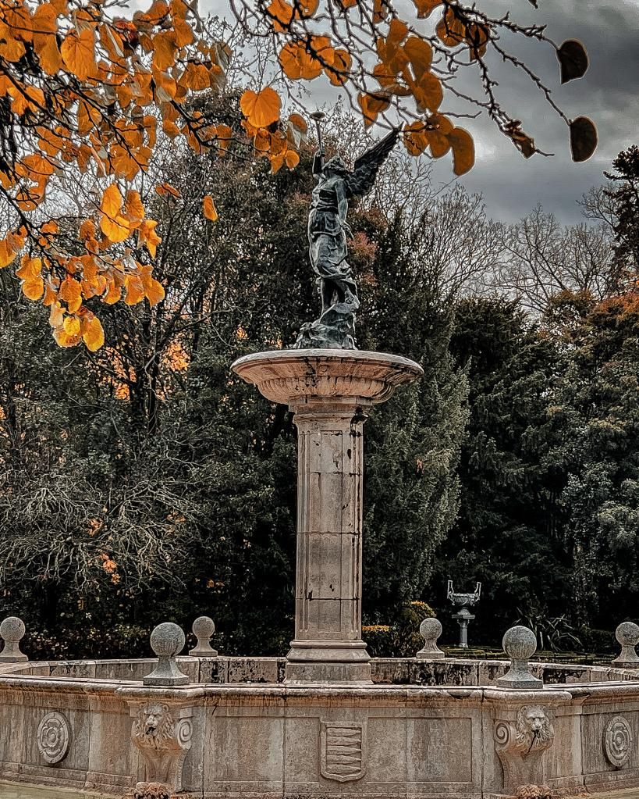

Mejores Actividades
El Cenote Zací es un paraíso escondido en el centro de Valladolid, donde puedes nadar en sus aguas cristalinas y disfrutar de la belleza natural del lugar. Además, el cenote cuenta con instalaciones para picnic, lo que lo convierte en el lugar perfecto para pasar una tarde en familia.

Las Ruinas de Ek Balam son un sitio arqueológico fascinante situado cerca de Valladolid. Este lugar ofrece una experiencia más tranquila y menos concurrida que Chichen Itzá. Puedes explorar las impresionantes estructuras mayas, subir a las pirámides y disfrutar de vistas panorámicas de la selva circundante.
Descubre la belleza colonial de Valladolid en bicicleta. Recorre sus coloridas calles y plazas, y visita monumentos históricos como la Catedral de San Gervasio. Este paseo te permitirá conocer la ciudad de una manera divertida y ecológica.
Chichen Itzá, una de las nuevas siete maravillas del mundo, es una visita obligada. Admira la majestuosa Pirámide de Kukulkán, el Templo de los Guerreros y el Observatorio. Este sitio arqueológico te transportará al pasado y te permitirá descubrir la grandeza de la civilización maya.
El Convento de San Bernardino de Siena ofrece un espectáculo de luz y sonido que cuenta la historia del lugar. Disfruta de una noche mágica mientras aprendes sobre la historia colonial de Valladolid y admiras la impresionante arquitectura del convento.
Mejores Temporadas para Visitar
Primavera (Marzo - Mayo): Durante esta temporada, el clima es agradable y hay menos turistas. Es el momento perfecto para disfrutar de actividades al aire libre y explorar la ciudad sin las multitudes del verano.
Otoño (Septiembre - Noviembre): El otoño es ideal para visitar Valladolid, ya que el clima es perfecto y hay varios festivales y eventos culturales en la región. Disfruta de una experiencia auténtica y sumérgete en la cultura local durante esta época del año.